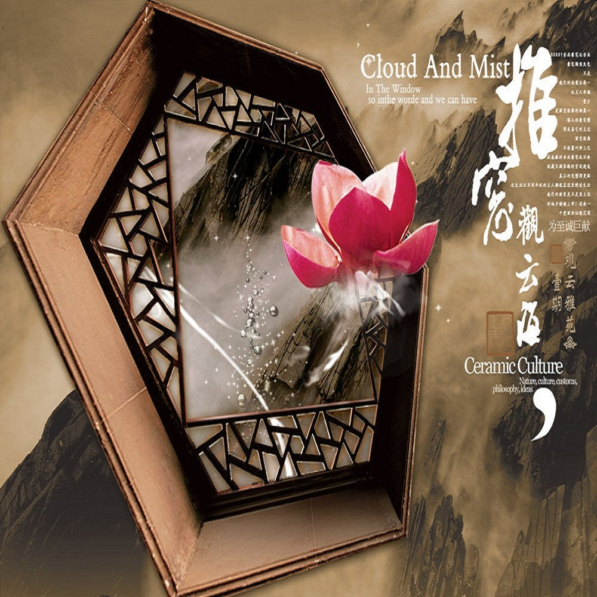

春江花月夜———张若虚
春江潮水连海平，海上明月共潮生。
滟滟随波千万里，何处春江无月明!
江流宛转绕芳甸，月照花林皆似霰;
空里流霜不觉飞，汀上白沙看不见。
江天一色无纤尘，皎皎空中孤月轮。
江畔何人初见月？江月何年初照人？
人生代代无穷已，江月年年望相似。
不知江月待何人，但见长江送流水。
白云一片去悠悠，青枫浦上不胜愁。
谁家今夜扁舟子？何处相思明月楼？
可怜楼上月徘徊，应照离人妆镜台。
玉户帘中卷不去，捣衣砧上拂还来。
此时相望不相闻，愿逐月华流照君。
鸿雁长飞光不度，鱼龙潜跃水成文。
昨夜闲潭梦落花，可怜春半不还家。
江水流春去欲尽，江潭落月复西斜。
斜月沉沉藏海雾，碣石潇湘无限路。
不知乘月几人归，落月摇情满江树。
《选 择》 雪阳
每一条道路上都有出发的人每个人头顶上都有一方天空
每一方天空上都有莫测的云
每一朵云都兆示着命运
无声地选择方向
一颗星辰或一双眼睛
人怎样地选择世界
世界就怎样地选择人
默默地选择起点,
骄傲地选择归程
夜间选择黎明的人
黎明选他为自由的风
选择飞鸟或者一片落叶
选择岩石或者一阵灰尘
谁在无可选择中选择
他就是被选择的人
每个人都有一颗无名的心
每颗心都有寂寞的时辰
谁选择寂寞的世界
世界选择他的歌声
流星在选择中下沉
太阳在选择中上升
